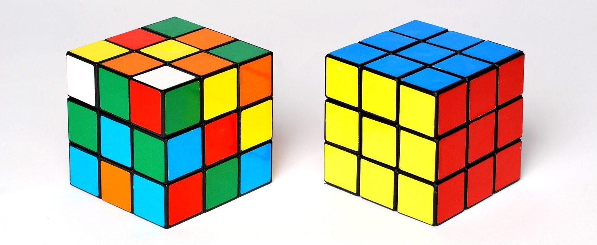

Je suis débutant
Je suis intermédiaire
Je maitrise le Rubik's Cube
Tout d'abord, j'utiliserais des formules pour résoudre notre Rubik's cube. Sachez que toutes ses formules seront notées par des lettres (comme R) qui tournent dans le sens des aiguilles d'une montre par rapport à l'axe dans lequel le cube est orienté. Il existe aussi les moiuvements inverses qui consistent à tourner les faces dans le sens inverse des aiguilles d'une montre (Elles seront notées par exemple R').
Maintenant je vais vous listez toutes les formules qui seront utilisées :
R = tournez le côté droit de votre cube quand vous le prennez devant vous;
R' = sens opposé à R;
L = tournez le côté gauche de votre cube quans vous le prenez devant vous;
L' = sens opposé à L;